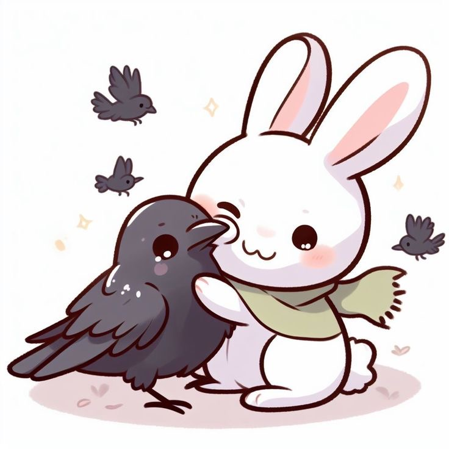
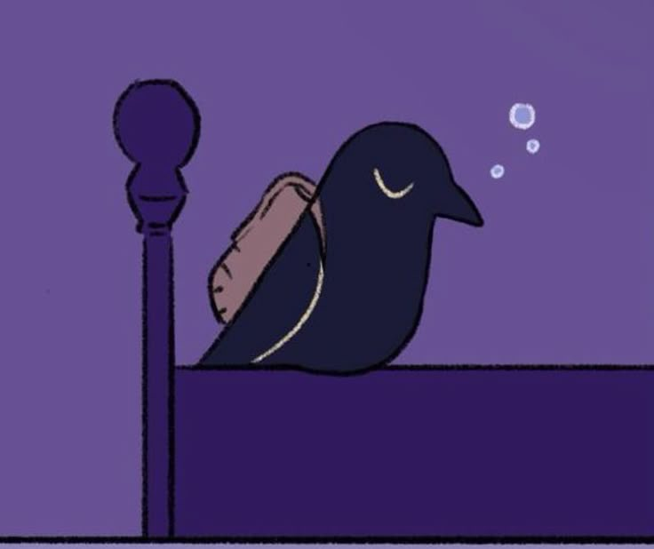
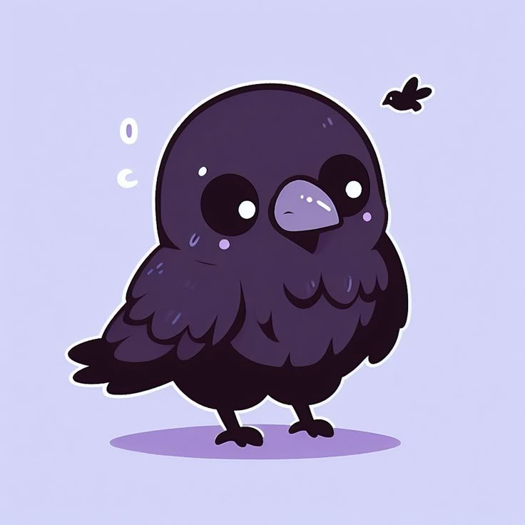

<!DOCTYPE html>
<html lang="it">
<head>
  <meta charset="UTF-8">
  <meta name="viewport" content="width=device-width, initial-scale=1.0">
  <title>Sai quanto ti amo?</title>
  <link href="https://fonts.googleapis.com/css2?family=Pacifico&family=Inter:wght@400;700&display=swap" rel="stylesheet">
  <style>
    /* Variabili CSS */
    :root {
      /* Colori Fase 1 (Introduzione) */
      --intro-bg-color: #fef1f5; /* Rosa chiaro */
      --intro-text-color: #333; /* Testo scuro */
      --intro-clickable-hover: #ffc8d3; /* Hover per l'immagine cliccabile */

      /* Colori Fase 2 (Quiz - Sfondo viola scuro) */
      --quiz-bg-color: #372D56; /* Viola scuro dominante dall'immagine del corvo che dorme */
      --quiz-text-color: #F5F5F5; /* Testo molto chiaro per leggibilità su sfondo scuro */
      --quiz-font: 'Inter', sans-serif;
      --quiz-primary-color: #6a05ad; /* Viola scuro/intenso per bottoni/selezione */
      --quiz-button-hover-color: #8b008b;
      --quiz-border-color: #C8C1DA; /* Bordo più chiaro per contrasto */
      --quiz-container-bg: rgba(55, 45, 86, 0.9); /* Container viola scuro leggermente trasparente */
      --quiz-shadow-color: rgba(0, 0, 0, 0.4);
      --quiz-selected-option-color: #A799FF; /* Viola pastello dolce per opzione selezionata */


      --quiz-question-color: #E0E0E0; /* Domande in un colore molto chiaro su sfondo scuro */

      /* Colori Fase 3 (Risultato - Sfondo viola scuro come corvo) */
      --result-bg-color: #372D56; /* Viola scuro come sfondo del corvo che dorme */
      --result-text-color: #333; /* Testo scuro per il container bianco */
      --result-primary-color: #6a05ad;
      --result-container-bg: #f5f3ff; /* Container risultato viola chiaro */
      --result-shadow-color: rgba(0, 0, 0, 0.15); /* Ombra normale per il container */

      --transition-speed: 0.8s;
    }

    body {
      margin: 0;
      padding: 0;
      font-family: 'Segoe UI', sans-serif;
      background-color: var(--intro-bg-color);
      color: var(--intro-text-color);
      display: flex;
      flex-direction: column;
      align-items: center;
      justify-content: center;
      min-height: 100vh;
      transition: background-color var(--transition-speed) ease, color var(--transition-speed) ease;
      text-align: center;
      position: relative;
      overflow-x: hidden;
    }

    #app {
      max-width: 90%;
      width: 100%;
      padding: 20px;
      box-sizing: border-box;
      position: relative;
      min-height: 500px;
      display: flex;
      flex-direction: column;
      justify-content: center;
      align-items: center;
      transition: background-color var(--transition-speed) ease, box-shadow var(--transition-speed) ease, padding var(--transition-speed) ease;
    }

    /* Stili per la Fase 2 (Quiz) */
    body.phase-2 {
        background-color: var(--quiz-bg-color);
        color: var(--quiz-text-color);
        font-family: var(--quiz-font);
    }
    #app.phase-2 {
        background-color: var(--quiz-container-bg);
        box-shadow: 0 8px 20px var(--quiz-shadow-color);
        max-width: 95%;
        padding: 30px 20px;
        color: var(--quiz-text-color);
    }

    /* Stili per la Fase 3 (Risultato) */
    body.phase-3 {
        background-color: var(--result-bg-color); /* Sfondo viola scuro per la pagina dei risultati */
        color: var(--result-text-color);
        font-family: var(--quiz-font);
    }
    #app.phase-3 {
        background-color: var(--result-container-bg); /* Contenitore bianco */
        box-shadow: 0 8px 20px var(--result-shadow-color); /* Ombra normale per il container */
        max-width: 95%;
        padding: 30px 20px;
        color: var(--result-text-color);
        min-height: auto;
        height: auto;
        padding-bottom: 20px;
        display: flex; /* Assicura che i contenuti siano disposti in colonna */
        flex-direction: column;
        align-items: center;
    }

    .hidden {
      display: none !important;
    }

    /* Stili introduttivi romantici con font originale */
    #intro h1 {
        font-family: 'Segoe UI', sans-serif;
        color: #e91e63;
        font-size: 2.8em;
        margin-bottom: 10px;
        text-shadow: 1px 1px 2px rgba(0,0,0,0.1);
    }
    #intro p {
        font-family: 'Segoe UI', sans-serif;
        font-size: 1.2em;
        color: #555;
        margin-bottom: 30px;
        line-height: 1.5;
    }

    /* IMPEGNO: Immagine intro con bordo circolare e ombra */
    #intro-image {
        width: 180px;
        height: 180px;
        border-radius: 50%; /* Reso circolare */
        object-fit: cover;
        cursor: pointer;
        transition: transform 0.3s ease-out, box-shadow 0.3s ease-out;
        box-shadow: 0 6px 12px rgba(0, 0, 0, 0.25);
        margin-top: 20px;
        border: 4px solid var(--intro-clickable-hover);
    }
    #intro-image:hover {
        transform: scale(1.08);
        box-shadow: 0 8px 16px rgba(0, 0, 0, 0.4);
    }

    /* Stili per la pagina "Ora che hai cliccato..." */
    #pre-quiz-section h2 {
        color: white; /* Titolo in bianco */
        margin-bottom: 25px;
        font-weight: 700;
    }
    /* Stili per il quiz vero e proprio */
    #quiz-section h2 {
        color: var(--quiz-primary-color);
        margin-bottom: 25px;
        font-weight: 700;
    }
    /* Stili per la pagina dei risultati */
    #result-section h2 {
        color: var(--result-primary-color);
        margin-bottom: 25px;
        font-weight: 700;
    }

    /* IMPEGNO: Pulsante/Immagine "Inizia il Quiz" circolare con bordo neon */
    #start-quiz-image {
        width: 200px; /* Dimensione dell'immagine */
        height: 200px;
        object-fit: cover;
        border-radius: 50%; /* Reso circolare */
        cursor: pointer;
        transition: transform 0.3s ease-out, box-shadow 0.3s ease-out;
        /* Bordo neon per l'immagine */
        box-shadow: 0 0 10px 2px #ff00ff, 0 0 20px 6px #8a2be2;
        margin-top: 30px;
        border: 4px solid var(--quiz-primary-color); /* Bordo colorato per la base */
    }
    #start-quiz-image:hover {
        transform: scale(1.05);
        /* Intensifica il neon all'hover */
        box-shadow: 0 0 15px 3px #ff00ff, 0 0 25px 8px #8a2be2;
    }


    .question-section {
        margin-bottom: 30px;
        text-align: left;
        width: 100%;
    }

    .question-section p {
      font-size: 1.15em;
      margin-bottom: 15px;
      color: var(--quiz-question-color);
      font-weight: bold;
    }

    .options label {
        display: block;
        background-color: var(--quiz-container-bg);
        padding: 15px;
        margin-bottom: 10px;
        border-radius: 8px;
        cursor: pointer;
        transition: background-color 0.3s ease, border-color 0.3s ease;
        border: 1px solid var(--quiz-border-color);
        font-size: 1em;
        color: var(--quiz-text-color);
        /* Bordo neon per le opzioni del quiz */
        box-shadow: 0 0 5px 1px #ff00ff, 0 0 10px 3px #8a2be2;
    }

    .options label:hover {
        background-color: rgba(255, 255, 255, 0.2);
        border-color: var(--quiz-primary-color);
    }

    .options input[type="radio"] {
        display: none;
    }

    /* Stile per l'opzione selezionata (viola pastello) */
    .options input[type="radio"]:checked + label {
        background-color: var(--quiz-selected-option-color); /* Viola pastello dolce */
        border-color: var(--quiz-primary-color); /* Mantiene il bordo viola scuro */
        color: white; /* Testo bianco per contrasto */
        /* Bordo neon un po' più intenso per l'opzione selezionata */
        box-shadow: 0 0 10px 2px #ff00ff, 0 0 20px 6px #8a2be2;
    }

    /* I pulsanti di navigazione sono stati rimossi in JS, ma tengo lo stile base */
    .action-button {
        background-color: var(--quiz-primary-color);
        color: white;
        border: none;
        padding: 15px 25px;
        border-radius: 8px;
        font-size: 1.1em;
        cursor: pointer;
        transition: background-color 0.3s ease, transform 0.2s ease;
        margin-top: 20px;
        /* Bordo neon per tutti i pulsanti (in questo caso il pulsante "Inizia il Quiz" se ripristinato, o altri eventuali) */
        box-shadow: 0 0 10px 2px #ff00ff, 0 0 15px 5px #8a2be2;
    }

    .action-button:hover {
        background-color: var(--quiz-button-hover-color);
        transform: translateY(-2px);
    }

    .action-button:disabled {
        background-color: #999;
        cursor: not-allowed;
        transform: translateY(0);
    }

    /* #quiz-navigation non è più usato, ma lo lascio vuoto per precauzione */
    #quiz-navigation {
        display: none; /* Nascosto completamente */
    }

    #summary {
        list-style: none;
        padding: 0;
        margin-bottom: 20px;
        text-align: left;
        width: 100%; /* Occupa la larghezza disponibile */
    }
    #summary li {
        margin-bottom: 10px;
        line-height: 1.4;
    }
    #summary strong {
        display: block;
        margin-bottom: 5px;
    }

    #final-phrase {
        font-size: 1.4em;
        font-style: italic;
        margin-bottom: 30px;
        color: var(--result-primary-color);
        word-wrap: break-word;
        text-align: center; /* Centra la frase finale */
        width: 100%; /* Occupa la larghezza disponibile */
    }

    /* IMPEGNO: Immagine finale del corvo, ora gestita come blocco e riposizionata */
    #final-image-wrapper {
        width: 150px;
        height: 150px;
        display: flex;
        justify-content: center;
        align-items: center;
        margin-top: 20px; /* Spazio sopra l'immagine */
        opacity: 0;
        transition: opacity 0.5s ease-in-out;
        /* Bordo neon per l'immagine del corvo da condividere */
        box-shadow: 0 0 15px 5px #ff00ff, 0 0 25px 10px #8a2be2;
        border-radius: 50%; /* Mantiene la forma circolare anche con il bordo neon */
    }
    #final-image-wrapper.show {
        opacity: 1;
    }

    #final-image {
        width: 100%;
        height: 100%;
        object-fit: cover;
        cursor: pointer;
        transition: transform 0.3s ease-out;
        border-radius: 50%;
    }

    #final-image:hover {
        transform: scale(1.1);
    }

    /* Media queries per una migliore responsività */
    @media (max-width: 600px) {
        #app {
            padding: 20px;
            margin: 10px;
        }

        #intro h1 {
            font-size: 2.2em;
        }
        #intro p {
            font-size: 1em;
        }
        #intro-image {
            width: 150px;
            height: 150px;
        }

        #pre-quiz-section h2, #quiz-section h2, #result-section h2 {
            font-size: 1.6em;
        }

        .question-section p {
            font-size: 1em;
        }

        .options label {
            padding: 12px;
            font-size: 0.95em;
        }

        .action-button {
            padding: 12px 20px;
            font-size: 1em;
        }

        #final-phrase {
            font-size: 1.2em;
        }

        #final-image-wrapper {
            width: 120px;
            height: 120px;
        }
    }
  </style>
</head>
<body class="phase-1">
  <div id="app">
    </div>

  <script>
    const app = document.getElementById('app');
    const body = document.body;
    let userAnswers = [];
    let currentQuestionIndex = 0;

    const quizData = [
      {
        question: "Qual è la verità che ti fa più male ammettere?",
        options: ["Che non sono abbastanza.", "Che se sparissi, non cambierebbe niente.", "Che faccio ridere anche quando mi spezzo.", "Che ho bisogno, ma non lo dico."]
      },
      {
        question: "Quando stai male, cosa fai finta di essere?",
        options: ["Impegnato.", "Tranquillo.", "Distratto.", "Fortissimo."]
      },
      {
        question: "Cosa ti è mancato più di tutto?",
        options: ["Qualcuno che mi ascoltasse davvero.", "Un abbraccio sincero.", "Una voce che mi dicesse “resta”.", "Una volta in cui non mi sono sentito di troppo."]
      },
      {
        question: "A chi avresti voluto dire qualcosa, ma non l’hai fatto?",
        options: ["A chi mi ha dimenticato.", "A me stesso, quando avevo paura.", "A chi mi ha usato.", "A chi ho lasciato andare senza capirmi."]
      },
      {
        question: "Qual è il pensiero che ti fa più male, anche se non lo dici?",
        options: ["Che forse non sarò mai scelto.", "Che chi dice di amarmi non mi vede.", "Che nessuno resterebbe se sapesse tutto.", "Che valgo solo quando sorrido."]
      },
      {
        question: "Quando hai pianto da solo, cosa ti sei detto?",
        options: ["“Devo smettere.”", "“Tanto nessuno capirebbe.”", "“Non posso crollare adesso.”", "“Almeno qui non mi vede nessuno.”"]
      },
      {
        question: "Cosa tieni nascosto anche a chi ti ama?",
        options: ["La mia rabbia silenziosa.", "La voglia di sparire.", "Tutte le volte che mi sento finto.", "I pensieri che mi fanno paura."]
      },
      {
        question: "Cosa speri ancora, ma non lo ammetteresti mai?",
        options: ["Che qualcuno mi scelga e resti.", "Che io possa smettere di fingere.", "Che il dolore un giorno serva a qualcosa.", "Che qualcuno dica: “Non importa, resto comunque.”"]
      }
    ];

    const finalPhraseText = "Hai imparato a sembrare intera. Ma dentro, ogni giorno, perdi un pezzo che nessuno reclama.";


    function renderIntro() {
        app.innerHTML = `
            <div id="intro">
                <h1>Sai quanto ti amo?</h1>
                <p>Clicca per scoprire il mio amore verso di te.</p>
                
            </div>
        `;
        body.className = 'phase-1';
        app.className = ''; // Rimuovi classi specifiche del container
        document.getElementById('intro-image').addEventListener('click', renderPreQuiz);
    }

    function renderPreQuiz() {
        app.innerHTML = `
            <div id="pre-quiz-section">
                <h2>Ora che hai cliccato… vediamo il tuo lato nascosto.</h2>
                
            </div>
        `;
        body.className = 'phase-2';
        app.className = 'phase-2'; // Applica classi per il container
        document.getElementById('start-quiz-image').addEventListener('click', renderQuiz);
    }

    function renderQuiz() {
        if (userAnswers.length === 0) { // Inizializza le risposte solo alla prima entrata nel quiz
            userAnswers = new Array(quizData.length).fill(undefined);
        }

        const q = quizData[currentQuestionIndex];
        let optionsHtml = '';
        q.options.forEach((option, optionIndex) => {
            const checked = userAnswers[currentQuestionIndex] === option ? 'checked' : '';
            const selectedStyle = userAnswers[currentQuestionIndex] === option ?
                'background-color: var(--quiz-selected-option-color); border-color: var(--quiz-primary-color); color: white;' : '';
            optionsHtml += `
                <input type="radio" id="q${currentQuestionIndex}o${optionIndex}" name="question${currentQuestionIndex}" value="${option}" ${checked}>
                <label for="q${currentQuestionIndex}o${optionIndex}" style="${selectedStyle}">${option}</label>
            `;
        });

        app.innerHTML = `
            <div id="quiz-section">
                <div id="quizContent">
                    <div class="question-section">
                        <p>${currentQuestionIndex + 1}. ${q.question}</p>
                        <div class="options">${optionsHtml}</div>
                    </div>
                </div>
            </div>
        `;
        body.className = 'phase-2';
        app.className = 'phase-2'; // Applica classi per il container

        // Aggiungi listener per le opzioni
        document.querySelectorAll(`#quizContent input[type="radio"]`).forEach(input => {
            input.addEventListener('change', (event) => {
                selectAnswer(currentQuestionIndex, event.target.value, event.target);
                // Avanza alla prossima domanda o mostra il risultato automaticamente
                setTimeout(() => { // Piccolo ritardo per visualizzare la selezione
                    if (currentQuestionIndex < quizData.length - 1) {
                        currentQuestionIndex++;
                        renderQuiz();
                    } else {
                        renderResult();
                    }
                }, 300); // 300ms di ritardo
            });
        });
    }

    function selectAnswer(questionIndex, answer, selectedInput) {
        userAnswers[questionIndex] = answer;

        const optionsLabels = selectedInput.parentElement.querySelectorAll('label');
        optionsLabels.forEach(label => {
            label.style.backgroundColor = 'var(--quiz-container-bg)';
            label.style.borderColor = 'var(--quiz-border-color)';
            label.style.color = 'var(--quiz-text-color)';
            // Rimuovi lo shadow dalle opzioni non selezionate per coerenza
            label.style.boxShadow = '0 0 5px 1px #ff00ff, 0 0 10px 3px #8a2be2';
        });

        selectedInput.nextElementSibling.style.backgroundColor = 'var(--quiz-selected-option-color)'; // Viola pastello
        selectedInput.nextElementSibling.style.borderColor = 'var(--quiz-primary-color)';
        selectedInput.nextElementSibling.style.color = 'white';
        // Applica lo shadow più intenso all'opzione selezionata
        selectedInput.nextElementSibling.style.boxShadow = '0 0 10px 2px #ff00ff, 0 0 20px 6px #8a2be2';
    }

    function renderResult() {
        let summaryHtml = '';
        userAnswers.forEach((answer, index) => {
            summaryHtml += `
                <li>
                    <strong>${index + 1}. ${quizData[index].question}</strong> <br> &rarr; ${answer}
                </li>
            `;
        });

        app.innerHTML = `
            <div id="result-section">
                <h2>La verità che non dici</h2>
                <ul id="summary">${summaryHtml}</ul>
                <p id="final-phrase">${finalPhraseText}</p>
                <div id="final-image-wrapper">
                    
                </div>
            </div>
        `;
        body.className = 'phase-3';
        app.className = 'phase-3'; // Applica classi per il container

        // Mostra l'immagine finale della condivisione con un leggero ritardo per l'effetto di transizione
        const finalImageWrapperElement = document.getElementById('final-image-wrapper');
        finalImageWrapperElement.classList.add('show');
        document.getElementById('final-image').addEventListener('click', shareWhatsApp);
    }

    function shareWhatsApp() {
        let whatsappMessage = "Ho scoperto il mio lato nascosto:\n\n";

        userAnswers.forEach((answer, index) => {
            whatsappMessage += `${index + 1}. ${quizData[index].question} → ${answer}\n`;
        });

        whatsappMessage += `\n"${finalPhraseText}"`; // Usa la costante
        whatsappMessage += `\n\nScoprilo anche tu: ${window.location.href}`;

        const encodedMessage = encodeURIComponent(whatsappMessage);
        const whatsappUrl = `https://wa.me/?text=${encodedMessage}`;

        window.open(whatsappUrl, '_blank');
    }

    // Inizializza l'applicazione mostrando la prima fase
    renderIntro();
  </script>
</body>
</html>
